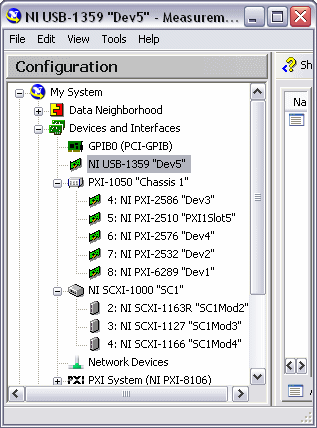

调用初始化将开关设置为已知状态，并允许您模拟开关并重置设备。使用 niSwitch Initialize With Topology VI 或niSwitch_InitWithTopology函数进行初始化也允许您定义拓扑。
对于您编写的任何应用程序，调用 niSwitch Initialize With Topology VI 或niSwitch_InitWithTopology函数来建立与交换机的通信。
使用 niSwitch Initialize With Topology VI 或niSwitch_InitWithTopology函数与交换机建立会话并发送初始化命令，将仪器设置为 NI-SWITCH 操作所需的状态。niSwitch Initialize With Topology VI 或niSwitch_InitWithTopology函数还验证 NI-SWITCH 是否支持开关，将开关重置为已知状态，返回用于在所有后续 NI-SWITCH 调用中识别仪器的 ViSession 句柄，并允许您设置交换机的拓扑结构，包括仿真。
niSwitch Initialize With Topology VI 和niSwitch_InitWithTopology函数覆盖您在 Measurement & Automation Explorer (MAX) 中设置的开关模块的拓扑。有关在 MAX 中配置开关模块的信息，请参阅NI Switches Getting Started Guide 。
要与正确的开关模块建立会话，您必须将资源名称传递给 niSwitch Initialize With Topology VI 或niSwitch_InitWithTopology函数。资源名称的语法取决于您在 MAX 中配置开关模块的位置——在Devices and Interfaces或PXI System下。
|
如果您在 MAX 中的Devices and Interfaces下配置了 switch 模块，则资源名称是引号中的字符串。例如，下图中 NI PXI-2576 的资源名称为Dev4。将此字符串传递给 niSwitch Initialize With Topology VI 或niSwitch_InitWithTopology函数。您只需在 MAX 中单击设备并输入新名称，即可重命名在设备和接口下配置的交换机模块的资源名称。
|  |
您还可以通过调用niSwitch Initialize VI 或niSwitch_init函数，或通过调用niSwitch Initialize With Options VI 或niSwitch_InitWithOptions函数来打开与开关模块的会话。niSwitch Initialize VI 或niSwitch_init函数执行 niSwitch Initialize With Topology VI 或niSwitch_InitWithTopology函数的所有功能，但它不设置交换机的拓扑。相反，驱动程序使用您在 MAX 中为开关模块设置的拓扑。niSwitch Initialize VI 或niSwitch_init功能适用于那些对维护 IVI 合规性感兴趣的人。有关 IVI 的更多信息，请参阅ivifoundation.org。
除了执行 niSwitch Initialize VI 或niSwitch_init函数的所有功能外，niSwitch Initialize With Options VI 或niSwitch_InitWithOptions函数可选择设置开关的初始状态。使用 niSwitch Initialize With Options VI 或niSwitch_InitWithOptions函数，您可以配置拓扑、范围检查、缓存、强制记录、模拟和状态报告。请参考niSwitch Initialize With Options VI 或niSwitch_InitWithOptions函数的选项字符串( optionString ) 参数。
初始化交换机后，您必须对其进行配置。
 提交有关此主题的反馈。
提交有关此主题的反馈。 访问ni.com/support以获得技术支持。
访问ni.com/support以获得技术支持。